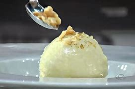

Froid é um rapper, que por algum motivo eu me indentifico. Esse é o tipo de comida que ele não costuma comer, mas por viver experiencias novas, ele provaria.
Sorvete de Baunilha artesanal

Ingredientes
330ml de leite
100g de açucar
1/2 fava de baunilha
5 gemas peneiradas
50g de noz picada
5g de manteiga
5g de açucar
Modo de Preparo
Aqueça o leite com a fava de baunilha aberta até o ponto de fervura. Bata as gemas peneiradas com açúcar até obter uma gemada esbranquiçada. Coloque um pouco do leite fervido na mistura das gemas para temperá-las e não talharem. Mexa bem.
Coloque a mistura de volta na panela com o restante do leite e leve ao fogo até atingir 85º C e mantenha nessa temperatura por 5min. Caso não tenha um termômetro, mantenha no fogo para a mistura encorpar até o ponto de napê. Retire do fogo e coloque em uma assadeira (a maior possível) para gelar rápido. Quanto mais frio o freezer, melhor.
Quando começar a congelar a massa do sorvete, retire do freezer e bata vigorosamente com o fouet para quebrar os cristais de gelo que se formaram e deixar a massa cremosa. Voltar ao freezer e deixar até congelar novamente. Retirar e bater com o fouet. Repita esse processo três a cinco vezes
Pegue as nozes e as pique. Coloque tudo em uma frigideira, em fogo brando, com açúcar e manteiga derretido.
Montagem: você precisará de duas colheres de sopa em um copo de água quente. Coloque a farofa no prato e , com ajuda de uma colher, "espatule" o sorvete até ele ficar macio. Limpe a colher no copo d’água. Em seguida, com ajuda das duas colheres faça uma quenelle com o sorvete e posicione-a no prato sobre a farofa.